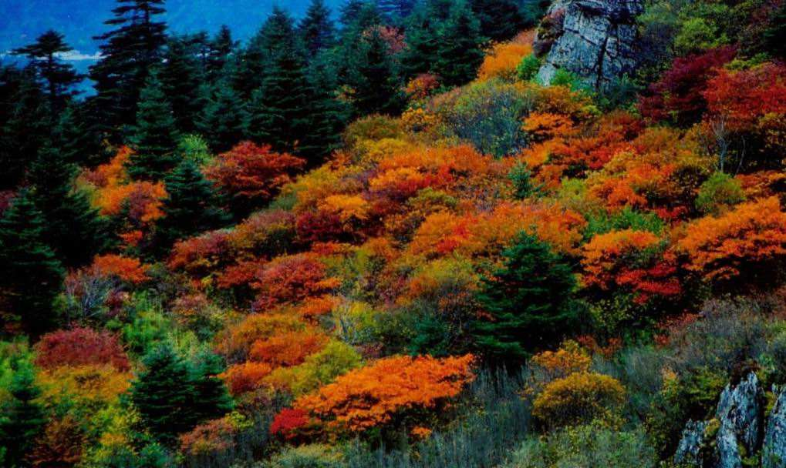
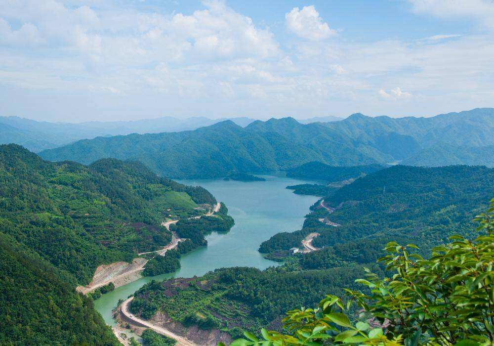

西出京城，举目眺望，就会看见小西山南端有三座突兀的山峰。南为虎头山，北为青龙山，中间的是翠微山，三山形如三角，呈鼎足之势。三山又像一把圈椅，翠微山（464米）为靠背，青龙山（438米）、虎头山（387米）为左右扶手。有人赞曰：三山鼎峙八大处，青龙白虎保翠微。
翠微山历史上又称为平坡山，山上苍松翠柏，四季常青，该山居中，海拔最高，三山庵、大悲寺、龙泉庵、香界寺、宝珠洞五座古刹分布其间，是八大处公园的主体山。

虎头山峰状若虎头，而整座山恰似一只卧虎，山名恰如其分；该山史籍中曾名觉山、翠微山，东麓建有长安寺和灵光寺。
青龙山自西北向东南，宛若一条青龙盘旋，其东山坡卢师山因卢师和尚的传说闻名遐迩，证果寺以及清凉寺、弘德寺、洪福寺、福惠寺、狮子窝塔院众多遗址都在青龙山上，文化底蕴极其深厚。
